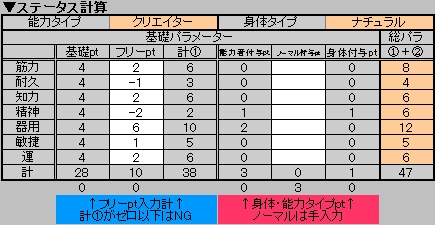

|
あなたにはまずフリーポイント１０p と 【 筋力 】【 耐久 】【 知力 】【 精神 】【 器用 】【 敏捷 】【 運 】に それぞれ４pの基礎パラメーター が与えられます。 フリーポイント１０pを基礎パラメーターに自由に振り分けて、 あなただけのキャラパラメーターを作成しましょう。 ただしどのパラメーターも０pは不可。各パラメーターの上限は２０です。 ２１以上になる場合は調整をして下さい。 ↓エクセルのステータス算出表では以下の様になっています。 フリーptの欄に計１０pになる様にポイント割り振りをしましょう。 ※以下の様にパラメーターをマイナスして調整もＯＫです。 
▼各パラメーター説明 パラメーター基準
又、以下の特殊ボーナスが付与される場合があります。
| |||||||||||||||||||||||||||||||||||||||||||||||||||||||||||||||||||||||||||